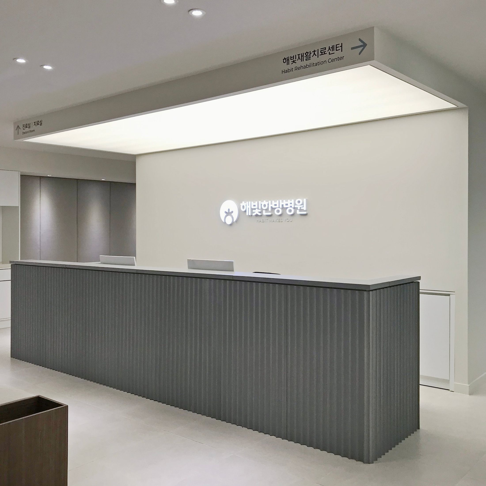
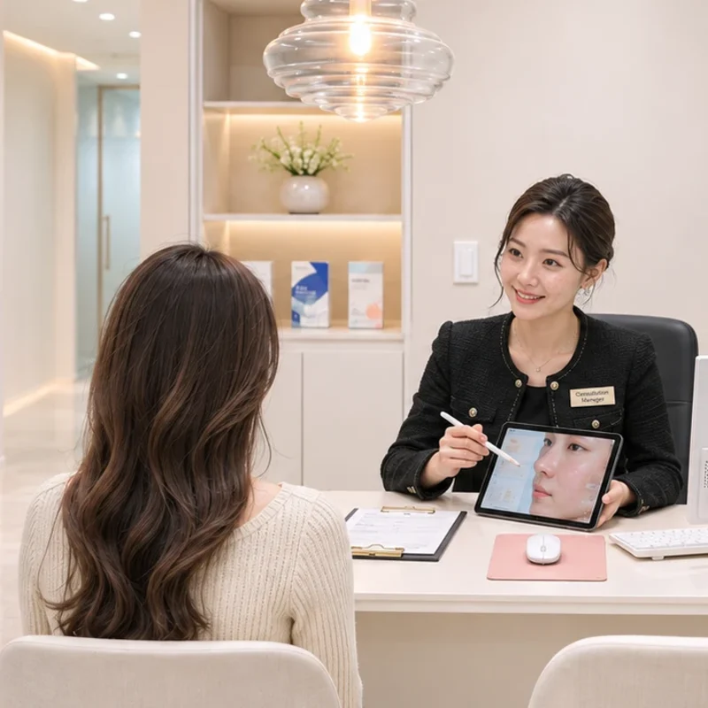
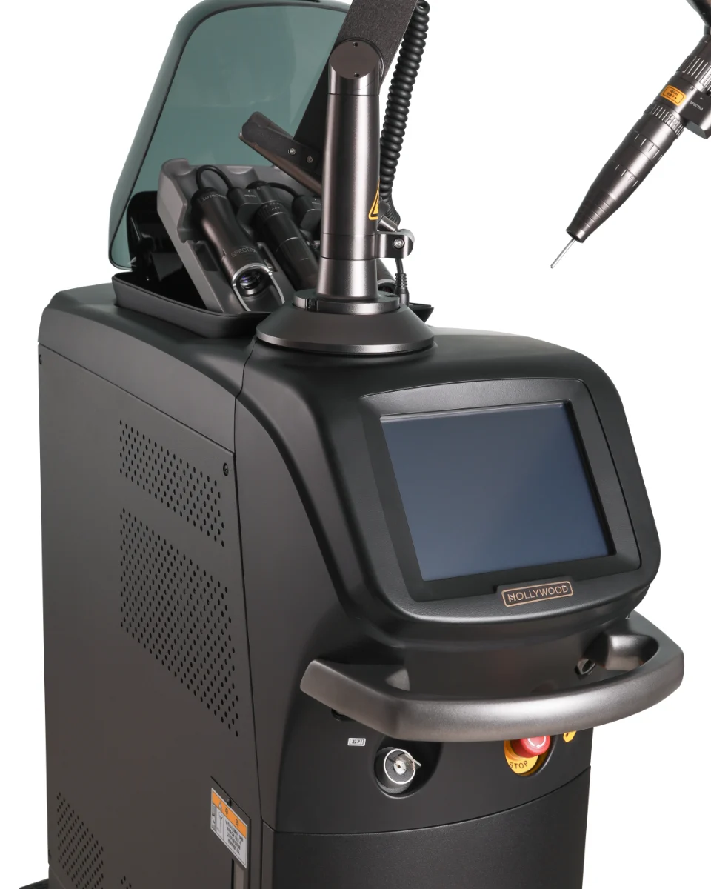
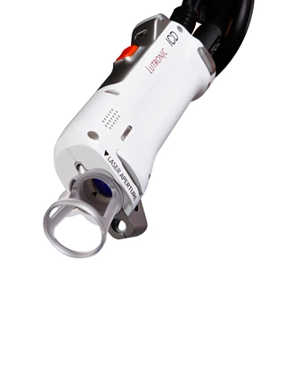
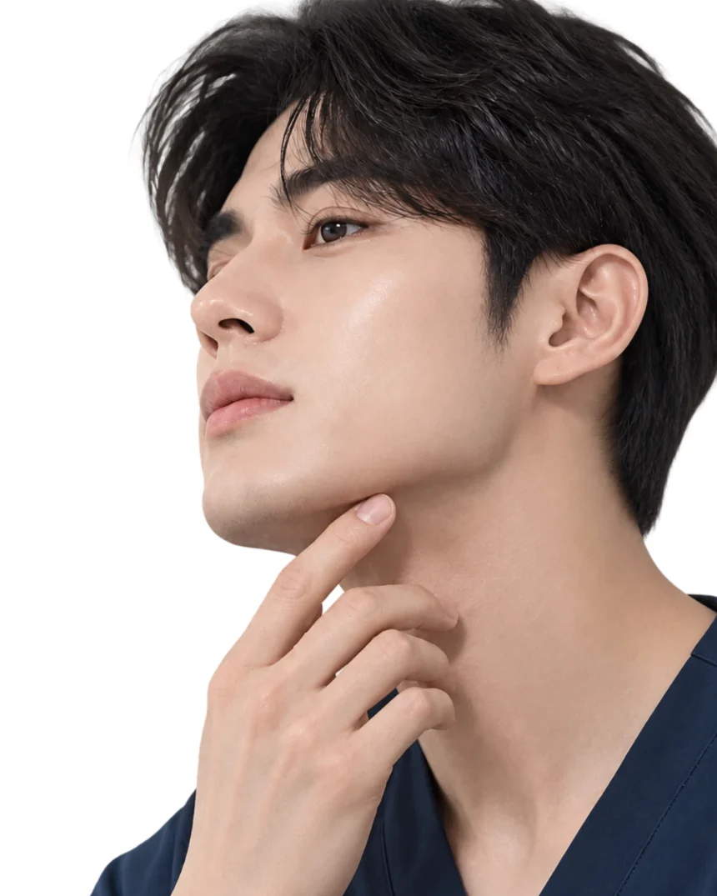
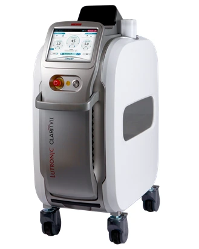
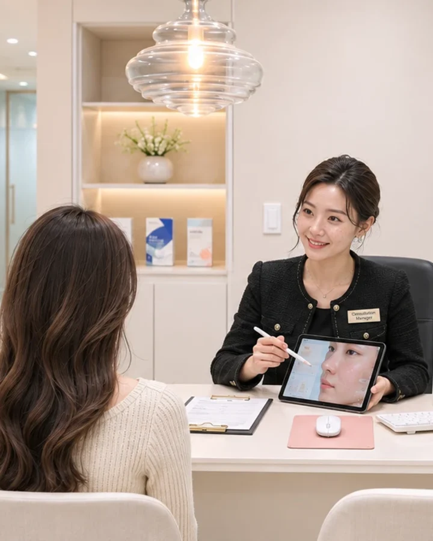
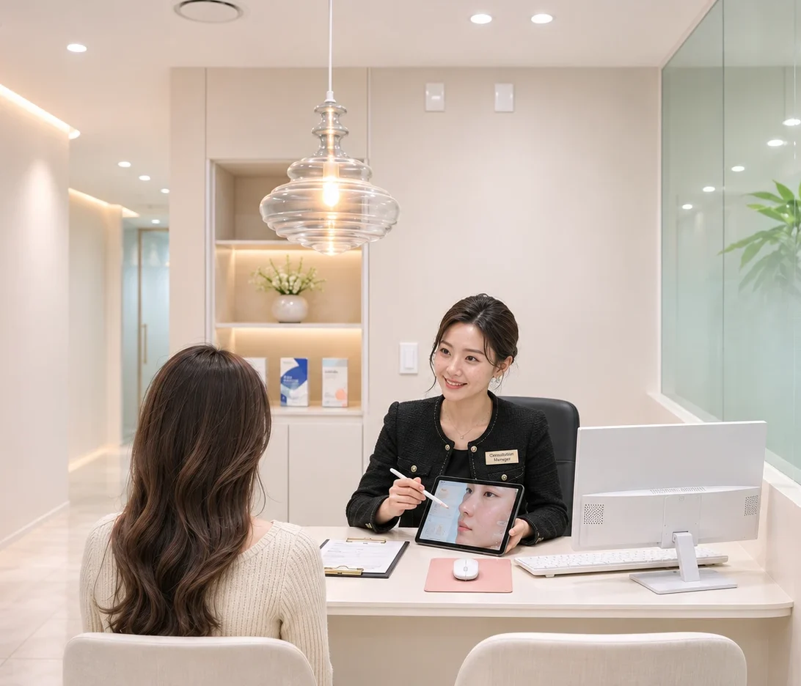

당신이 더 건강하고
더 아름다울 수 있도록
해빛한방병원 한방피부클리닉
내 고민과 내 피부에 부합하는 맞춤 솔루션을 찾아드립니다.
해빛한방병원 피부클리닉
건강과 회복력에 기반한
아름다움을 기획합니다
원장님의 개별문진과 정밀 피부진단기기 사용,
정확한 진단 이후 섬세한 시술로
건강하고 빛나는 피부를 만듭니다.
피부 탄력과 수분은 높게
피부 나이는 낮게


해빛한방병원 접수 데스크 · 상담실 (연출 사진)
고민으로 찾아보세요
지금 가장 신경 쓰이는 고민을 골라 보세요. 자세한 방법과 횟수는 진단과 상담 뒤에 안내드립니다.
토닝·색소
칙칙한 톤, 기미·잡티·주근깨
자세히 보기스킨부스터
건조하고 윤기 없는 피부
자세히 보기흉터·모공·점
여드름 흉터, 넓은 모공, 점·비립종
자세히 보기제모
수염·겨드랑이·인중
자세히 보기한방피부
약침, 몸 안쪽 균형까지 함께
자세히 보기여드름·재생관리
반복되는 트러블, 시술 후 진정
자세히 보기해빛스킨랩의 시그니처 프로그램
프로그램 비용은 피부 상태를 확인한 뒤 상담에서 안내드립니다. 확인 필요 · 장비 사진 촬영 후 교체

할리우드 레이저토닝
추천 · 피부 톤과 결이 신경 쓰이는 분
상담 후 안내
할리우드 카본필
추천 · 모공과 피부 결, 칙칙한 톤이 고민인 분
상담 후 안내
주근깨·검버섯 색소
추천 · 또렷한 색소 때문에 화장으로 가리게 되는 분
상담 후 안내

홍조·혈관
추천 · 얼굴 붉은기가 신경 쓰이는 분
상담 후 안내

남성 수염 제모
추천 · 매일 면도가 번거로운 분
상담 후 안내

겨드랑이·인중 제모
추천 · 부위별로 꾸준히 관리하고 싶은 분
상담 후 안내
흉터 재생 (레이저 + 새살침)
추천 · 여드름·상처 흉터가 오래 남아 고민인 분
상담 후 안내
모공 재생
추천 · 넓어진 모공과 거칠어진 결이 신경 쓰이는 분
상담 후 안내
점·비립종 제거
추천 · 점이나 비립종을 크기별로 상담해 보고 싶은 분
상담 후 안내
스킨부스터
추천 · 건조하고 윤기 없는 피부가 고민인 분
상담 후 안내
여드름 한방 케어
추천 · 반복되는 트러블로 지친 분
상담 후 안내

첫 방문 체험 프로그램
추천 · 스킨랩이 처음이라 상담부터 받아 보고 싶은 분
상담 후 안내
.price)만 바꾸면 됩니다. 이벤트·할인 문구는 의료광고 심의 후 사용하세요.진단부터 일상관리까지,
하나의 흐름으로 이어갑니다.
한방과 레이저가
만났을 때
흉터·모공·점은 레이저로, 회복은 새살침과 재생관리로. 시술 뒤 피부가 편안하게 돌아오는 과정까지 이어서 살펴봅니다.
흉터·모공·점 보기기미·잡티,
체질부터 보는 색소 치료
피부 상태와 체질을 함께 보고 강도와 주기를 정합니다. 색소는 다시 생기기 쉬워서, 자외선 차단 같은 생활 습관까지 같이 챙겨드립니다.
토닝·색소 보기
야누스 프로 피부 진단 +
한방 체질 문진
피부 상태를 눈으로 확인하고, 체질까지 함께 살핍니다. 그래서 같은 고민이라도 사람마다 다른 순서를 제안드립니다.
진단·장비 안내 보기규현 원장 칼럼
내 피부, 먼저 이야기해 주세요
오늘 고민을 말씀해 주시면, 어떤 순서가 좋을지 함께 정해 드려요. 상담과 진단만 받으셔도 괜찮습니다.
효과와 경과에는 개인차가 있습니다. 확인 필요 · 네이버 예약·카카오 채널 주소
오시는 길
해빛한방병원 · 스킨랩
- 주소
- 전북특별자치도 전주시 덕진구 사근1길 10 현대메디컬시티 2층
- 대표번호
- 063-715-5119
- 스킨랩 상담
- 확인 필요 · 스킨랩 전용 상담번호
진료시간
- 월·화·목·금
- 09:00 – 18:00 (점심 12:30 – 14:00)
- 수요일
- 09:00 – 19:00 (점심 12:30 – 14:00)
- 토요일
- 09:00 – 14:00
- 일요일·공휴일
- 휴진
마취나 관리 시간이 필요한 시술이 있어, 당일 시술을 원하시면 진료 마감 확인 필요 · 몇 시간 전까지 내원해 주세요.
스킨랩 진료시간 기준입니다. 확인 필요 · 시작 시간·점심시간